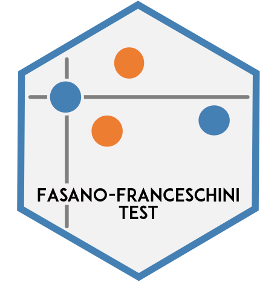

The fasano.franceschini.test package is an R implementation of the multidimensional Kolmogorov-Smirnov two-sample test as defined by Fasano and Franceschini (1987).
Fasano, G. & Franceschini, A. (1987). A multidimensional version of the
Kolmogorov-Smirnov test. Monthly Notices of the Royal Astronomical Society,
225:155-170. doi: 10.1093/mnras/225.1.155.Installation
You can install the released version of the fasano.franceschini.test package from CRAN with:
install.packages("fasano.franceschini.test")The development version of the fasano.franceschini.test package can be installed from GitHub with:
# install.packages("devtools")
devtools::install_github("nesscoder/fasano.franceschini.test")Examples
Underlying distributions are the same
library(fasano.franceschini.test)
# set seed for reproducibility
set.seed(0)
# create 2D samples from the same underlying distribution
S1 <- data.frame(x = rnorm(n = 50, mean = 0, sd = 1),
y = rnorm(n = 50, mean = 0, sd = 3))
S2 <- data.frame(x = rnorm(n = 100, mean = 0, sd = 1),
y = rnorm(n = 100, mean = 0, sd = 3))
fasano.franceschini.test(S1, S2, seed = 0)
#>
#> Fasano-Francheschini Test
#>
#> data: S1 and S2
#> D = 0.9815, p-value = 0.6535
#> 95 percent confidence interval:
#> 0.5522616 0.7454075
#> sample estimates:
#> D1 D2
#> 0.18 0.16Underlying distributions are different
# set seed for reproducibility
set.seed(1)
# create 3D samples from different underlying distributions
S1 <- cbind(rgamma(n = 43, shape = 2),
rpois(n = 43, lambda = 5),
rpois(n = 43, lambda = 3.5))
S2 <- cbind(rgamma(n = 72, shape = 2),
rpois(n = 72, lambda = 5),
rpois(n = 72, lambda = 5))
fasano.franceschini.test(S1, S2, seed = 1)
#>
#> Fasano-Francheschini Test
#>
#> data: S1 and S2
#> D = 1.6943, p-value = 0.0198
#> 95 percent confidence interval:
#> 0.002407173 0.069705090
#> sample estimates:
#> D1 D2
#> 0.2845607 0.3685401